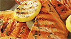

Garlic shrimp tacos
Category: Dinners

Ingredients
- ½ of a head green cabbage
- 4 cloves garlic, thinly sliced
- 1 pound peeled and deveined medium shrimp
- 2 tablespoons extra virgin olive oil
- ¼ teaspoon chipotle powder
- ¼ teaspoon kosher salt
- 8 corn tortillas
- toppings of your choice: salsa, guacamole, sliced radishes
- 1 lime, cut into wedges
Servings: 4
Directions
- Peel any discolored leaves away from the cabbage and discard. Cut the cabbage in half (reserve one half for another time) then into quarters. Cut out the core from each quarter. Now, as thinly as you can, slice the cabbage into lacy shreds. Place in a bowl.
- Peel the garlic and thinly slice.
- Lay the shrimp flat on your cutting board and, with your knife parallel to the cutting board, slice them in half.
- Place a medium skillet on the stove and turn the heat on to medium. Add the oil and heat until is shimmers (about 1 minute). Add the garlic and cook, stirring, until golden brown 1 to 2 minutes. Stir in the shrimp. Sprinkle with the chipotle and salt. Continue to cook and stir until the shrimp is opaque throughout, 3 to 5 minutes.
- Warm up your tortillas. Fill them with the shredded cabbage and shrimp. Top with the salsa. You can stop right here or keep adding more of your favorite toppings. Serve with lime.
Most recent recipes

Lemony Grilled Salmon Fillets with Dill Sauce
Posted:
09/12/16
Category:
Dinners
Posted:
09/12/16
Category:
Dinners
Posted:
09/12/16
Category:
Dinners